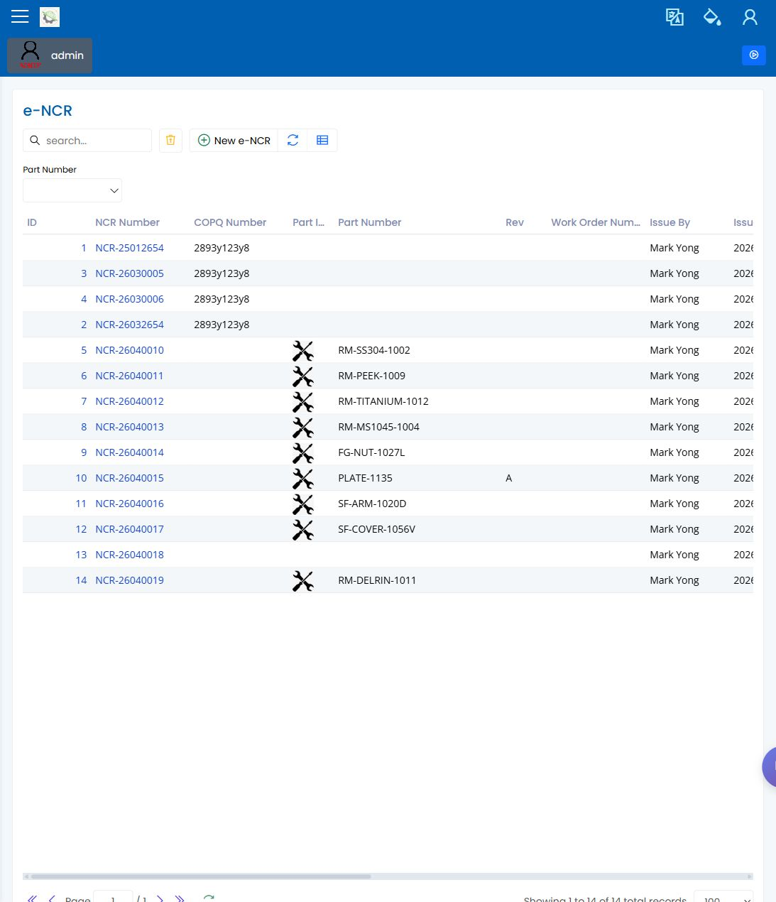

NCR 不合格
English | 中文
Path: Quality / NCR URL: 待决（已有登录截图，但未记录准确部署路由）
页面用途
NCR 用于记录和复查不合格作业、拒收数量、缺陷详情、复查备注和批准跟进。当检验或生产复查认为缺陷需要正式质量记录时使用此页。
你会看到什么
- 带搜索和筛选控件的 NCR 列表。
- 所选不合格记录的表头信息。
- 复查时使用的缺陷和拒收详情。
- 显示谁已复查或批准的字段。
你会做什么
- 从 Quality 区域打开 NCR 列表。
- 按作业、零件、NCR 编号或日期范围搜索。
- 打开 NCR 并确认缺陷类别、拒收数量和描述。
- 决定明确后填写复查备注或批准信息。
- 与生产和质量复查人员沟通时使用 NCR 参考号。
要检查什么
- NCR 属于正确的作业、零件和检验场景。
- 缺陷描述足够具体，便于后续处理。
- 将记录视为关闭前，能看到复查和批准信息。
- 保存前已处理屏幕上显示的校验信息。
常见问题
| 问题 | 含义 |
|---|---|
| 缺陷选项为空 | 所选类别的可见缺陷设置可能尚未准备好。 |
| 需要手工输入 NCR 编号 | 当前场景可能没有可用的建议编号。 |
| 保存失败 | 表头、缺陷、数量或复查字段可能缺失。 |
| 很难找到记录 | 清除筛选，再按日期、零件或作业参考搜索。 |
相关页面
截图
